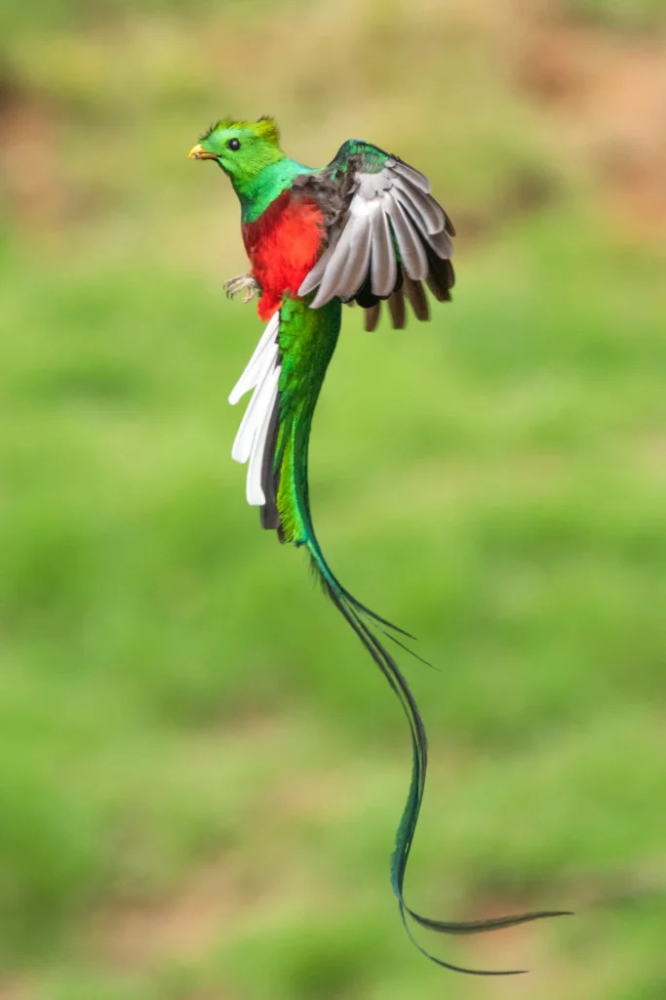

Quetzal Resplandeciente
pharomachrus mocinno
Ave emblematica de Costa Rica, famosa por su larga cola y plumaje tornasolado.
habitat: Bosque NubosoTucan Pico Iris
Ramphastos sulfuratus
Reconocible por su enorme pico colorido.
habitat: Tierras bajas y bosque humedoColibri Garganta de Rubi
Archilochus colubris
pequeno y agil, visitante estacional en los jardines del bosque.
Oropendola de Moctezuma
Psarocolius Montezuma
conocida por su nudo colgante y su distintivo canto.
habitat: Tierras bajas